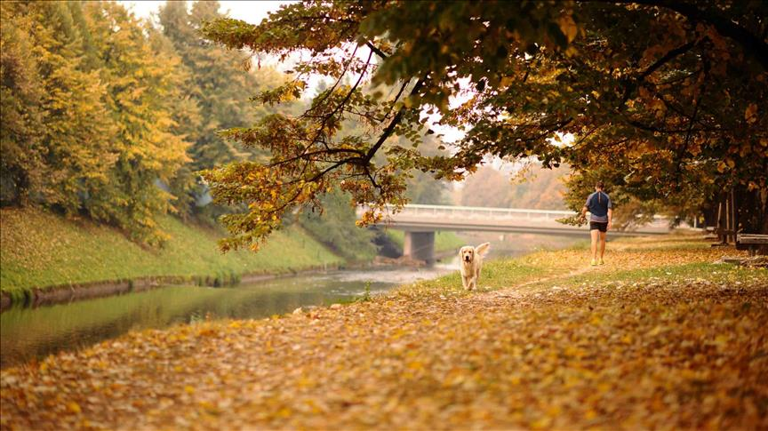
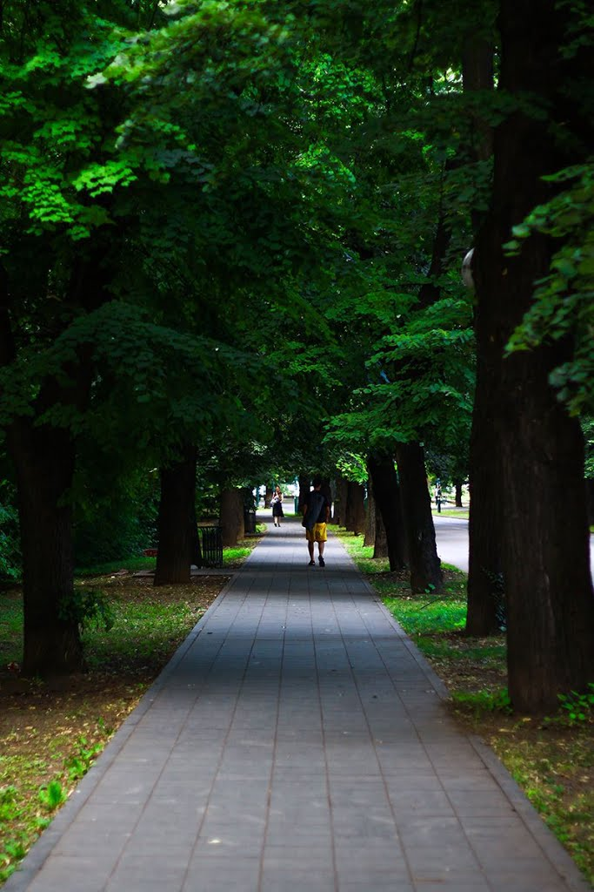
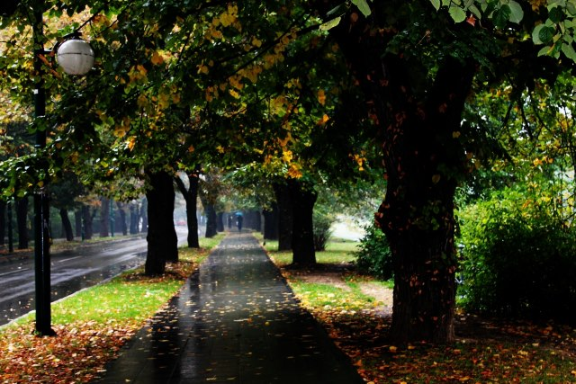
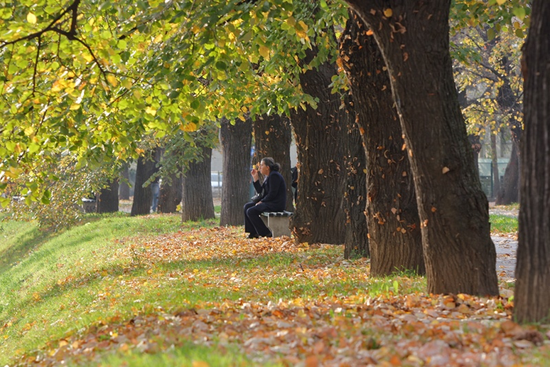

Najpopularnije šetalište u Sarajevu je Vilsonovo šetalište, koje se proteže skoro dva kilometra uz desnu obalu Miljacku od Mosta Suade i Olge do zgrade Elektroprivrede BiH. Šetalište je formirano za vrijeme Austro-Ugarske vladavine, a prvo ime bilo mu je Kalajeva promenada, po zajedničkom ministru finansija Austro-Ugarske monarhije i upravitelju Bosne i Hercegovine – Benjaminu Kalaju.
Nakon uspostave Kraljevine SHS, Kalajeva promenada dobila je naziv Vilsonovo šetalište, po predsjedniku SAD-a Thomasu Woodrowu Wilsonu, koji je 1917. objavio rat Centralnim silama, što je bila prekretnica u Prvom svjetskom ratu. Tokom nacističko – ustaške okupacije od 1941. do 1945. se šetalište zvalo po italijanskom fašističkom vođi Musolinijevo šetalište, nakon rata ponovo je nazvano Vilsonovo, da bi 1960. godine dobilo ime Omladinsko šetalište. Naziv Vilsonovo šetalište ovoj atraktivnoj šetnici vraćen je 1993. godine.
 Sa obje strane šetališta su još početkom 20. stoljeća zasađeni gusti drvoredi lipe, koji ovo šetalište čine zelenom oazom usred Sarajeva. Saobraćajnicom koja vodi kroz šetalište zabranjen je saobraćaj motornim vozilima svakog radnog dana iza 17 sati, kao i vikendima i praznicima. Na nekoliko mjesta duž Vilsonovog šetališta postavljene su sprave za vježbanje, a najmlađima je na raspolaganju i ograđeno igralište. Uz šetalište se nalazi i nekoliko ugostiteljskih objekata, čije su bašte omiljena mjesta za izlazak u Sarajevu tokom ljetnih mjeseci.